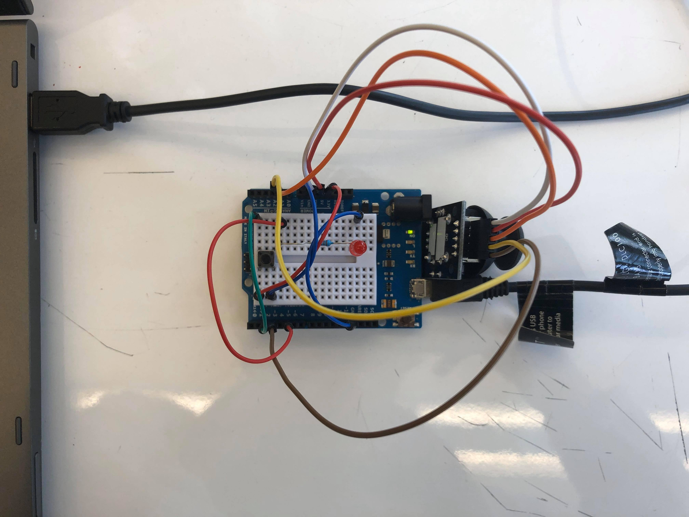
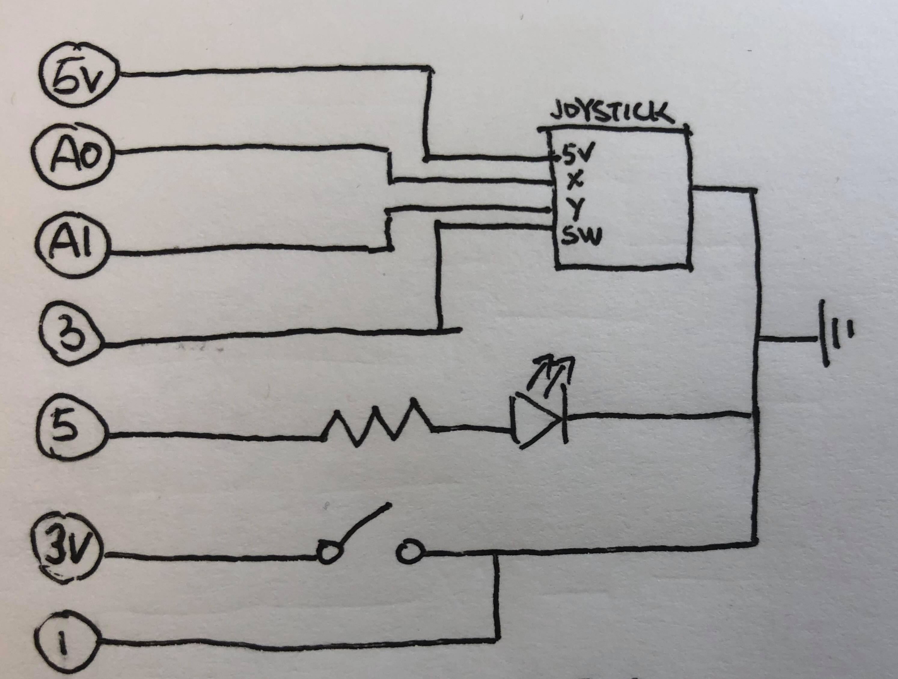
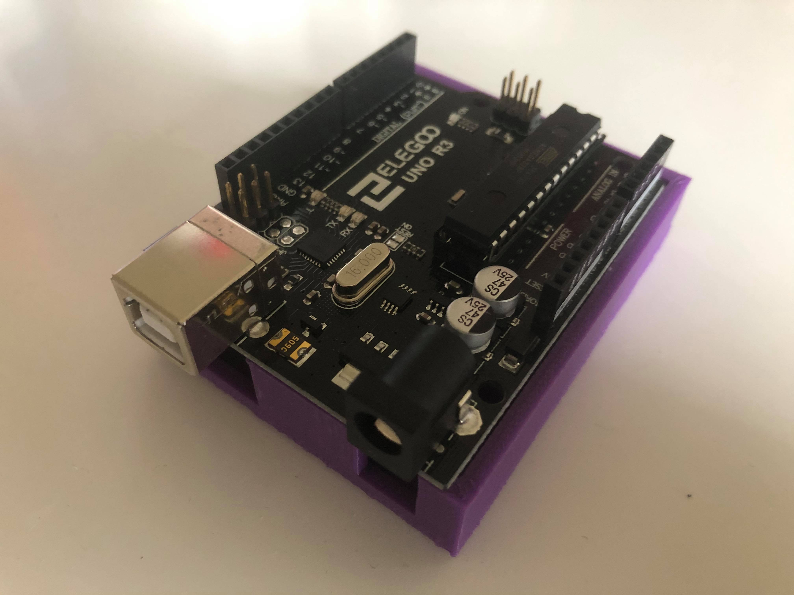

Jesse Du's Final Project!
My concept is to make a mouse for my laptop. By using the Mouse library it is possible to control the computer's cursor with an Arduino Leonardo and the joystick module. For better usability, I also want to be able to easily turn on and off mouse control without having to unplug the Arduino board.

A joystick module connected to the Arduino board with Dupont wires (ground, 5V, VRx to pin A0, VRy to pin A1, and switch to pin 3). A separate red LEG with 220 Ohm resistor connected to pin 5 and ground. A separate pushbutton connected to pin 1 and 3.3V power supply.

I chose a 220 Ohm resistor for the red LED as calculated from Ohm's Law (R=V/I=(5-1.8)/0.025=128 Ohms). The joystick does not require external resistor as it is essentially two potentiometres. The pushbutton uses the Arduino pin's built-in pull-up resistor.

By pressing the pushbutton, I turn on the Arduino's mouse control (the LED lights up as indicator) and use the Arduino as a regular mouse. Once I press the pushbutton again, the mouse is turned off and will no longer affect the computer cursor.
Below is the Arduino code snippet:
#include "Mouse.h" // import Mouse library for Arduino Leonardo
// set input pins and parametres
const int pushPin = 2; // pushbutton to turn on and off mouse control
const int mouseButton = 3; // joystick pushbutton
const int xAxis = A0; // joystick X axis
const int yAxis = A1; // joystick Y axis
const int ledPin = 5; // LED indicating mouse control
int range = 12; // joystick range of X or Y movement
int responseDelay = 5; // response delay
int threshold = range / 4; // resting threshold
int centre = range / 2; // resting position value
bool mouseControl = false; // boolean value for taking control of mouse
int lastPushState = LOW; // previous state of pushbutton
// setup code to run once
void setup() {
pinMode(pushPin, INPUT); // the switch pin
pinMode(ledPin, OUTPUT); // the LED pin
Mouse.begin(); // take control of mouse
}
// main code to run repeatedly
void loop() {
int pushState = digitalRead(pushPin); // read pushbutton
if (pushState != lastPushState) { // if button state changed from last state
if (pushState == HIGH) { // if buttons state is now HIGH
mouseControl = !mouseControl; // turn on mouse control
digitalWrite(ledPin, mouseControl); // turn on LED to indicate mouse state
}
}
lastPushState = pushState; // save last pushbutton state for comparison next loop
if (mouseControl) { // if mouse control is on
int x = mapAxis(A0); // read joystick X axis
int y = mapAxis(A1); // read joystick Y axis
Mouse.move(x, y, 0); // move the mouse based on X and Y axes reading
}
if (digitalRead(mouseButton) == HIGH) { // if joystick pushbutton is pressed
if (!Mouse.isPressed(MOUSE_LEFT)) { // if moust not already in left-click
Mouse.press(MOUSE_LEFT); // left-click
}
}
else {
if (Mouse.isPressed(MOUSE_LEFT)) { // if mouse is already in left-click
Mouse.release(MOUSE_LEFT); // release left-click
}
}
delay(responseDelay); // delay
}
// read X and Y axes and map input to range set out in parametre
int mapAxis(int axisInput) {
int reading = analogRead(axisInput); // read joystick analog input
reading = map(reading, 0, 1023, 0, range); // map analog input reading to output range
int movement = reading - centre; // register joystick movement from resting centre position
if (abs(movement) < threshold) { // do not register movement if less than specified threashold
movement = 0;
}
return movement; // return movement value
}
/*
This code is based on an example from the Arduino website.
http://www.arduino.cc/en/Tutorial/JoystickMouseControl
*/

I tried to 3D print a casing but it turned out to be a few millimetres too small… I meant to readjust and print again but campus got closed...